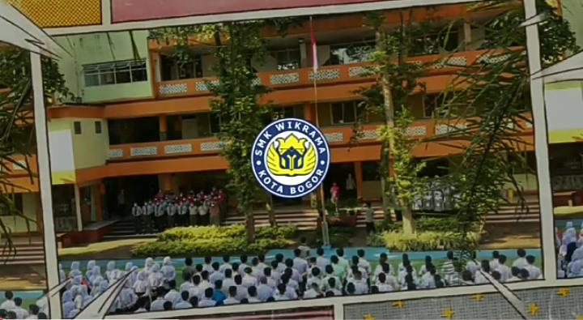

Matrikulasi adalah kegiatan pembelajaran yang dilakukan untuk memenuhi kekurangan dalam hal pengetahuan, ketrampilan dan sikap yang berfungsi untuk mengetahui kemampuan awal/ pemetaan kemampuan awal peserta didik yang diperlukan untuk mengikuti kegiatan pembelajaran.
Pada saat matrikulasai siswa dan siswi SMK WIKRAMA mempelajari pelajaran SMP